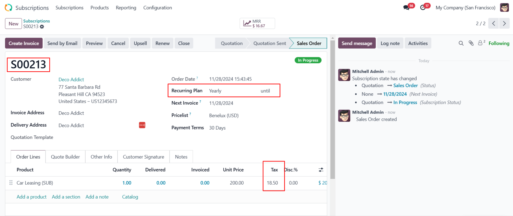
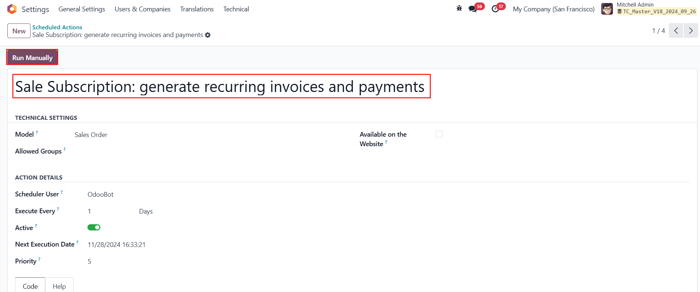
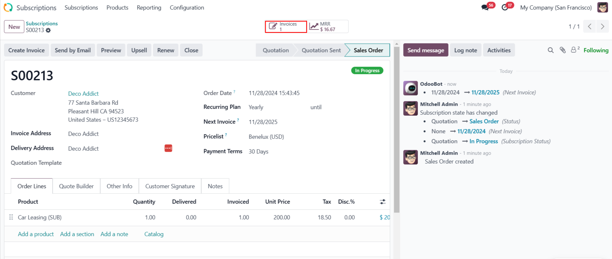
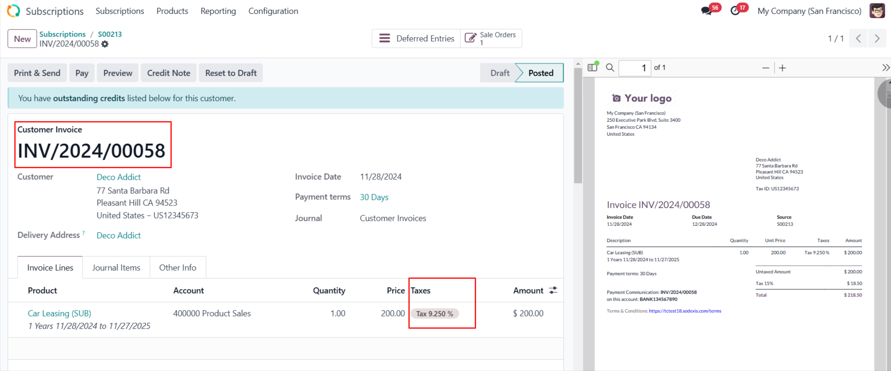
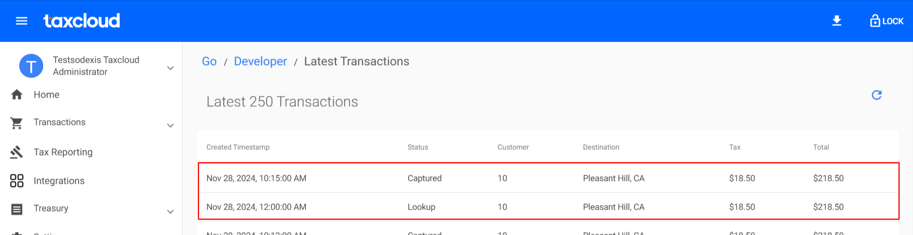

TaxCloud and Subscriptions
Description
This module integrates Odoo with TaxCloud. From Odoo 17, new installations are prohibited, and from Odoo 18, the TaxCloud module(s)
won’t exist at all. This module allows it to be installed as if TaxCloud officially supported
it.
This module acts as a bridge between Odoo and TaxCloud, ensuring a seamless and
efficient tax calculation. It computes tax with TaxCloud after the invoice has been
created automatically and ensures that the taxes are computed on the invoice before the payment is created
automatically for a subscription. It is compatible with multi-company environments.
Module Installation
- Users must download all the official TaxCloud modules listed
below from the Odoo Apps
Store before proceeding with the
installation process, even if they don’t use the related Odoo TaxCloud modules. This ensures they
get all the TaxCloud features and proper data transmission. If they use “Deploy on Odoo.sh” in the Apps Store, they must
deploy all the modules listed below.
- For example, suppose users have not installed the
Subscription app but have installed the Sales app. In that case, they are still recommended to download
all the official TaxCloud modules before installing the “Account
TaxCloud” module. The “Account TaxCloud - Sale” modules are
installed based on the installed modules list. In the future, installing the Subscription app will
automatically install the needed “TaxCloud and
Subscription” module. This ensures they do not miss any of the
TaxCloud features.
- Users did not use the Odoo TaxCloud Modules:
- If users are not currently using the Odoo module, they can
install this module by simply clicking the “Activate” button and following the
configuration steps below.
- Using Odoo TaxCloud Modules:
- Switching from the Odoo TaxCloud module to our
connector in odoo V17
- If users are currently using the Odoo TaxCloud module, then they
should not uninstall the current module before
installing this module; otherwise, they will lose all of their data. This module will take care of the
configuration & data transmission from the
existing module and automatic uninstallation of the Odoo TaxCloud module once installed. It is not necessary to reinstall the Odoo TaxCloud module.
- Migrating from Odoo 17 to Odoo 18 or from Earlier
Versions to Odoo 18
- Migrating from Odoo 17 to Odoo 18
- First, switch to the official connector in Odoo 17 to
prevent data loss. Then, proceed with the migration to Odoo 18 using our connector.
- Migrating from earlier versions to Odoo 18
- First, migrate to Odoo V17 using our official connector.
Then migrate to Odoo 18 to ensure all data is retained.
- Alternatively, the module can be installed directly in
Odoo 18 as a fresh installation and configured from scratch.
For any technical queries or support, contact us at 📧taxcloud@sodexis.com or visit the website at 🌐sodexis.com/taxcloud. Free support for the installation to the first few customers will be provided.
Configuration
The technical and functional configurations are detailed in the “Account TaxCloud” document. Please refer to the
documentation for any questions regarding TaxCloud.
Functionality
Navigate to the Subscription app and create a new subscription for the customer with the Recurring Product and the chosen Recurring Plan.
In Odoo, subscription products are also called recurring products.

The invoice is created automatically based on the scheduled action “Sale Subscription: generate recurring invoices and payments”.


This module ensures the tax is computed in the automatic invoice which in turn
validates the tax amount.

On the TaxCloud website, locate the Transactions menu and select Reports which shows the recent transactions in Odoo.
The Status of the Subscription can be seen as “Lookup” and the invoice as “Captured” with the computed invoice as shown
below.

Document Version: 1.0
Credits
Contributors
For additional information or inquiries regarding TaxCloud, feel free to reach out to
us at
Sodexis <📧taxcloud@sodexis.com> or visit our
website at <🌐sodexis.com/taxcloud>
This module is maintained by Sodexis.